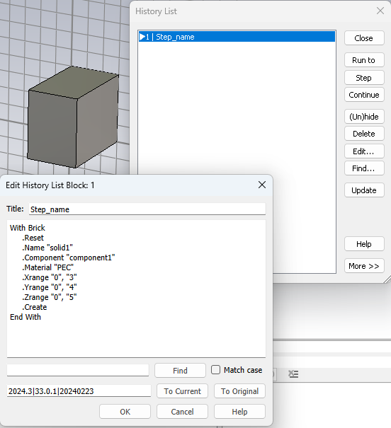
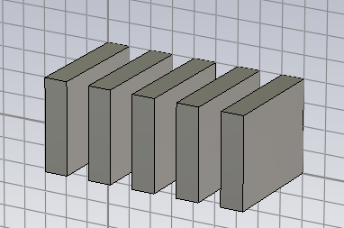
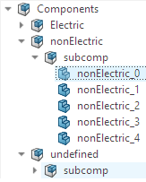
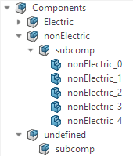
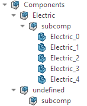

Shape Modeling¶
For Shape modeling, Visual Basic (VBA) code is used in combination with the python API. For more information on VBA, take a look at the Visual Basic documentation
Please run the following preparations:
import cst.interface
from pathlib import Path
import tempfile
from typing import Iterator
project_dir = Path(tempfile.mkdtemp())
print(f"Working in temporary directory: {project_dir}")
de = cst.interface.DesignEnvironment.connect_to_any_or_new()
Create a new Shape¶
This becomes a brick:
# create a new Microwave Studio project
prj = de.new_mws()
# define a String holding the VBA code for creating a Brick
vba_code = """
With Brick
.Reset
.Name "solid1"
.Component "component1"
.Material "PEC"
.Xrange "0", "3"
.Yrange "0", "4"
.Zrange "0", "5"
.Create
End With
"""
# add the VBA code to the History List
prj.model3d.add_to_history("create brick", vba_code)
To execute a VBA code, it needs to be added to the history using prj.model3d.add_to_history("Step_name", vba_code).
As shown below, this creates a new Brick and a history block in the modeler.

If the defined component does not exist, it will be created automatically.
Automation of the Shape creation¶
Using the code from above combined with a simple loop and formatted strings, we can create multiple Bricks.
# create a new Microwave Studio project
prj = de.new_mws()
for x in range(0, 10, 2):
vba = f"""
With Brick
.Reset
.Name "solid_{x}"
.Component "component_solid"
.Material "PEC"
.Xrange "{x}", "{x + 1}"
.Yrange "0", "4"
.Zrange "0", "5"
.Create
End With
"""
prj.model3d.add_to_history(f"brick at {x}", vba)
prj.save( project_dir / "multiple_shapes.cst", allow_overwrite=True)
It is important that the Name of each shape is unique.
Trying to create a shape with an already existing name will result in a RuntimeError.
Also note that the header of each history block (here brick at {x}) needs to be unique.
Running the code creates five Brick shapes, as seen below.

Setting the Units¶
So far, the Python scripts added geometries with coordinates and dimensions assuming the default length unit, without actually checking which unit is set. When creating a new empty project, the first history block should set the units for the project, which all further constructions will use.
# create a new Microwave Studio project
prj = de.new_mws()
# define a String holding the VBA code for setting the units
unit_vba = """
With Units
.SetUnit ("Length", "m")
.SetUnit ("Frequency","Hz")
.SetUnit ("Time", "ms")
.SetUnit ("Temperature", "K")
End With
"""
# add the VBA code to the History List
prj.model3d.add_to_history("set units", unit_vba)
Setting the units of your project follows the same pattern as creating a Shape. For this, you need to create a String containing the corresponding VBA code for setting the units and add that code to the History List. This process is shown in the example code above.
The following table shows the different dimensions and their supported units.
dimension |
supported units |
|---|---|
Length |
nm, um, mm, cm, m, mil, in, ft |
Time |
fs, ps, ns, us, ms, s |
Frequency |
Hz, kHz, MHz, GHz, THz, PHz |
Temperature |
degC, K, degF |
For more information on the Units Object and the different Methods for Units, take a look at the Units page of the VBA documentation.
Creating a new Material¶
Usually data is not defined directly in the Python script, but rather read or imported from other sources. Here we assume that material data have been read from a certain json file, leading to the following, equivalent python statement:
# material data of some arbitrary kind:
materials = {
"FR-4": {
"type": "Normal",
"permittivity": 4.2,
"permeability": 1,
"Sigma": 0,
"TanD": 0.02,
"tan_delta_freq": 10,
"density_g_mm3": 1.85,
"ThermalConductivity": 0.3
},
"G-10": {
"type": "Normal",
"permittivity": 5,
"permeability": 1,
"Sigma": 0,
"TanD": 0.03,
"density_g_mm3": 1.8,
"ThermalConductivity": 0.29
},
"Copper": {
"type": "Lossy metal",
"permittivity": 1,
"permeability": 1,
"Sigma": 5.96e+7,
"TanD": 0,
"density_g_mm3": 8.9,
"ThermalConductivity": 400.0
}
}
# create a new Microwave Studio project
prj = de.new_mws()
# iterate through materials
for key, material in materials.items():
# VBA for creating a new Material
material_vba = f"""
With Material
.Reset
.Name "{key}"
.Folder "ImportedMaterials"
.Type "{material['type']}"
.Rho "{material['density_g_mm3'] * 1000}"
.ThermalConductivity "{material['ThermalConductivity']}"
.Epsilon "{material['permittivity']}"
.Mu "{material['permeability']}"
.Sigma "{material['Sigma']}"
"""
if "TanD" in material.keys():
# only add "TanD" if the value is not 0
if material["TanD"] == 0:
material_vba += """
.TanDGiven "False"
"""
else:
material_vba += f""" .TanD "{material['TanD']}"
.TanDGiven "True"
"""
# add TanDFreq only if the key is given
if "tan_delta_freq" in material.keys():
material_vba += f""" .TanDFreq "{material['tan_delta_freq']}"
"""
material_vba += """.Create
End With
"""
# add the VBA code_examples to the History List
prj.model3d.add_to_history(f"import {key}", material_vba)
Please have a look at the newly created materials in the navigation tree.
You will have to adapt the retrieval of the properties according to your storage format of the materials. Also make sure your values correspond to the units for the specific property in CST Studio.
The Units for the material properties are fixed and do not change when setting the project units.
All possible material properties and their corresponding VBA-names are listed in the VBA documentation in the Material Objects section. As the unit for the density is kg/m³ in CST Studio Suite, the value has to be converted as its given value is in g/cm³. This can either be done by hand (in this case, multiplying it by 1000) or using the cst.units package. An example for the second approach can be seen in the code below. This way, the material units can also be read from some material file and be converted automatically.
from cst.units import kg, g, m, cm
density = 1.85 * (g/cm**3)
density = density.convert_to(kg/m**3)
density_val = density.value
Working with created Items¶
To work with the created objects, the prj.model3d.get_tree_items() method can be used to get an overview
of the current contents of our project. This returns a flat list of all tree paths. Among other things, we can find
our shapes here. We create an example project for testing:
prj = de.new_mws()
def create_random_sphere_like_geometry(path, solidname):
from random import random
rad = random()
return f"""
With Sphere
.Reset
.Name "{solidname}"
.Component "{path}"
.Material "PEC"
.Axis "z"
.CenterRadius "{rad}"
.TopRadius "{0.2*rad}"
.BottomRadius "{0.3*rad}"
.Center "{100*random()}", "{100*random()}", "{100*random()}"
.Segments "0"
.Create
End With
"""
for comp in ("Electric", "nonElectric", "undefined"):
for i in range(5):
prj.model3d.add_to_history(
f"creating geom {comp} {i}",
create_random_sphere_like_geometry(
f"{comp}/subcomp",
f"{comp}_{i}"
)
)
For example, the shape selected in the Navigation Tree below would be returned in the list of all tree
paths as 'Components\nonElectric\subcomp\nonElectric_0'

For the following examples we will define two functions get_shapes_including(name, prj)
and get_components_including(name, prj). We will use these to keep the following example codes as simple as possible.
def get_shapes_including(name: str, prj: cst.interface.Project) -> Iterator[str]:
"""
Generator function to iterate over all 3D Shapes, whose name includes `name`.
"""
for item in prj.model3d.get_tree_items():
# split the path
split_item = item.split("\\")
# Only get items from "Components"
if "Components" in split_item[0]:
# Only get items including the given name
if name in split_item[-1]:
# get components the item is assigned to
components = split_item[1:-1]
# get the shape name
shape = split_item[-1]
# join components & path to get the path to the shape
component_path = "/".join(components)
shape_path = ":".join([component_path, shape])
# check if found item is a shape
if prj.model3d.Solid.DoesExist(shape_path):
yield shape_path
# test:
print( list( get_shapes_including("nonE", prj) ))
def get_components_including(name: str, prj: cst.interface.Project) -> Iterator[str]:
"""
Create iterator to iterate over all 3D Components, whose name includes `name`.
"""
for item in prj.model3d.get_tree_items():
# split the path
split_item = item.split("\\")
# make sure we are only deleting shapes or components
if "Components" == split_item[0]:
# search for our components (item-names are in last item of split_item)
if name in split_item[-1]:
# get components
components = split_item[1:]
# join components to the component path and append
component_path = "/".join(components)
# check if found item is a Component
if prj.model3d.Component.DoesExist(component_path):
yield component_path
# test:
print( list( get_components_including("nonE", prj) ))
These functions will yield all items in the Components branch of our Navigation Tree that include the given name in
their name.
Using prj.model3d.Solid.DoesExist() we ensure that the item found is a shape.
The same way prj.model3d.Component.DoesExist() is used in get_components_including
to ensure that the item found is a component.
The formatting of shapes is different to the formatting of components.
The items from get_shapes_including will yield strings that are formatted like this, for
example: “component1/sub_component1:solid1”
The items from get_components_including will yield strings that are formatted like this, for
example: “component1/sub_component1”
Deleting Shapes¶
# reuse `prj` from above
to_be_removed = "undefined_"
for shape_path in get_shapes_including(to_be_removed, prj):
# define the VBA code_examples & add to the history list
delete_vba = f'Solid.Delete "{shape_path}"'
prj.model3d.add_to_history(f"delete shape: {shape_path}", delete_vba)
The Code shown above gets the shape paths of all Navigation Tree items using the function defined before.
It then deletes all shapes that include the string “undefined_”.
This code will only delete shapes, as the VBA code for deleting shapes is different to the code for deleting components.
The component “undefined_test” includes the given string.
As explained earlier, its path won’t be returned because we checked,
if a shape with this name exists using the Solid.DoesExist() method.
After running the code, the Navigation Tree below shows the results. All shapes that included the “undefined_” string, seen at the beginning of Working with created Items, are removed.

Deleting components¶
We continue with the same prj.
to_be_removed = "nonElectric"
with de.quiet_mode_enabled():
for component_path in get_components_including(to_be_removed, prj):
# define the VBA code_examples & add to the history list
delete_vba = f'Component.Delete "{component_path}"'
prj.model3d.add_to_history(f"delete component: {component_path}", delete_vba)
To delete components including a specific string, we can use the previously defined function get_components_including
to get the component paths that include “nonElectric”. Running this code will delete all components (and their content) that
have “nonElectric” in their name.
The resulting Navigation Tree can be seen below.
